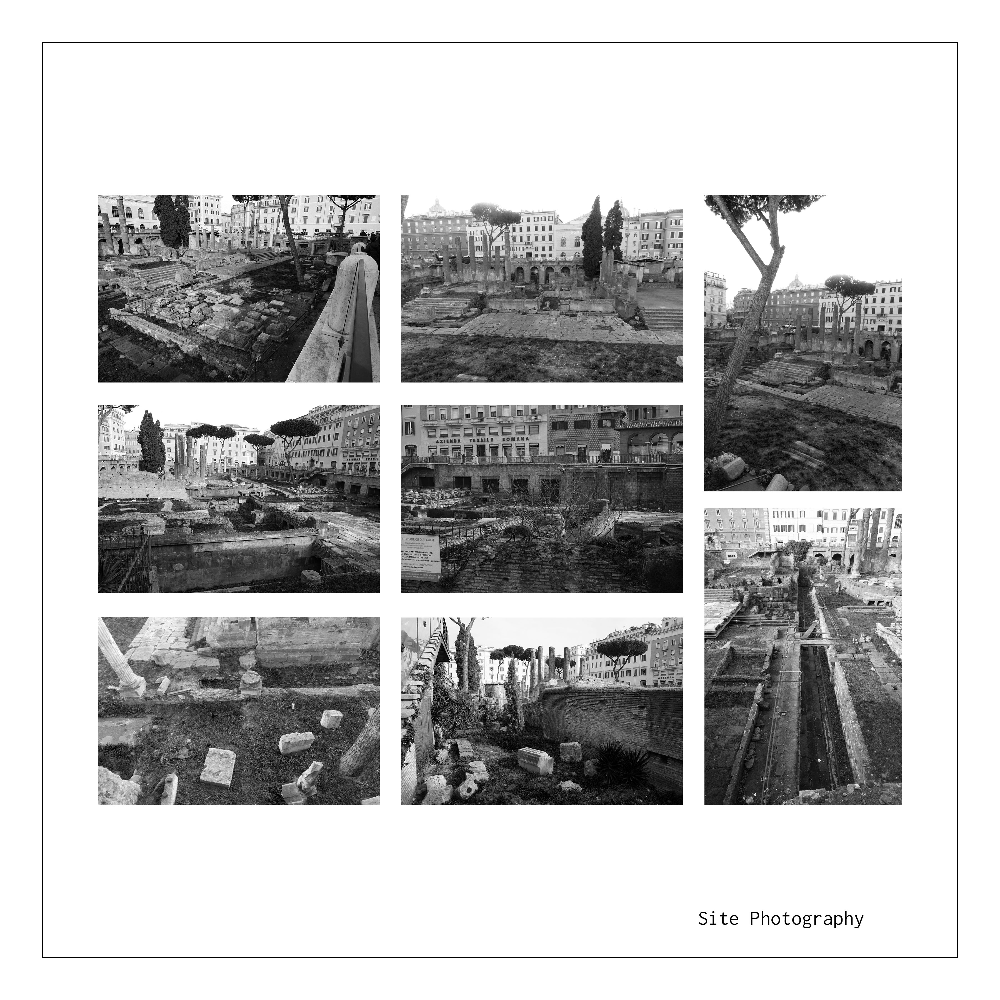
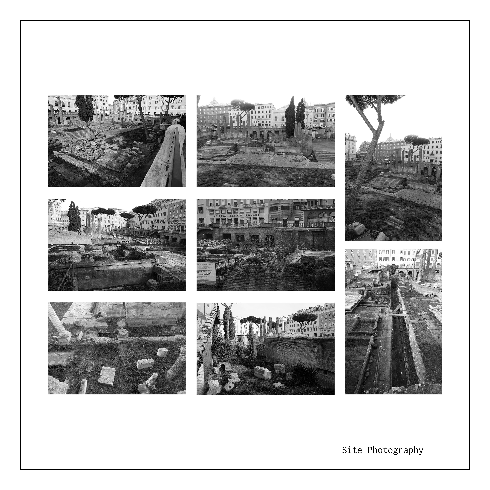
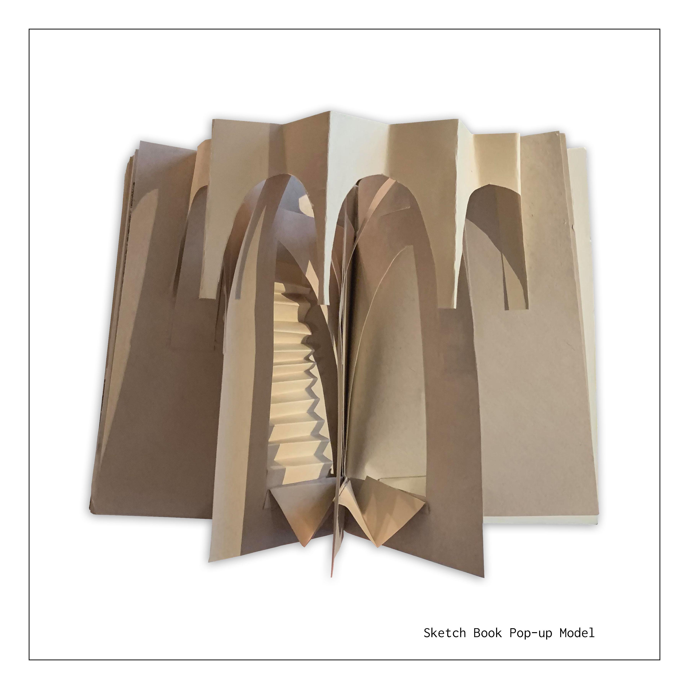
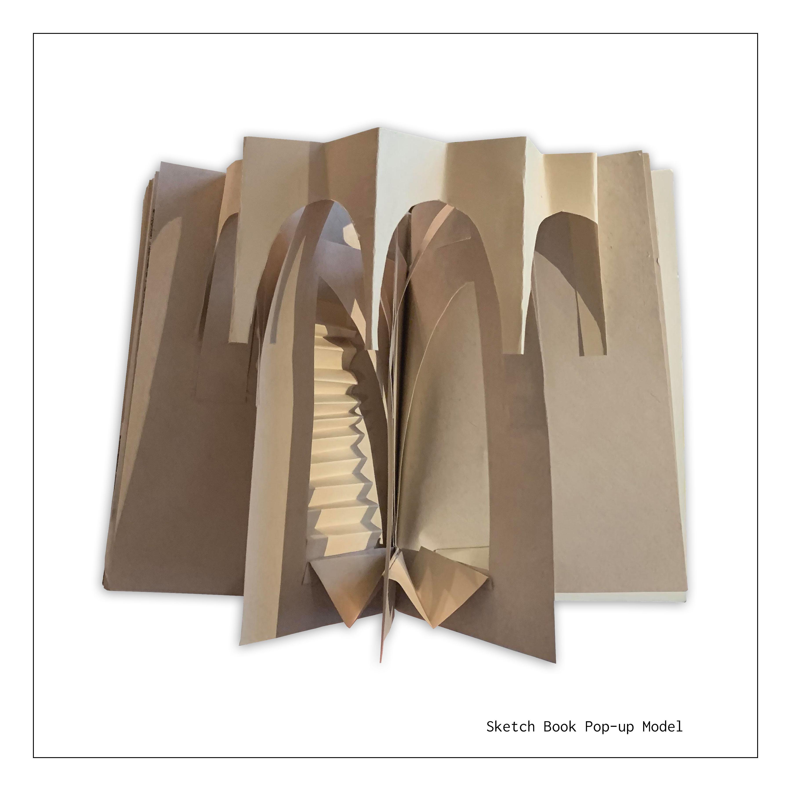
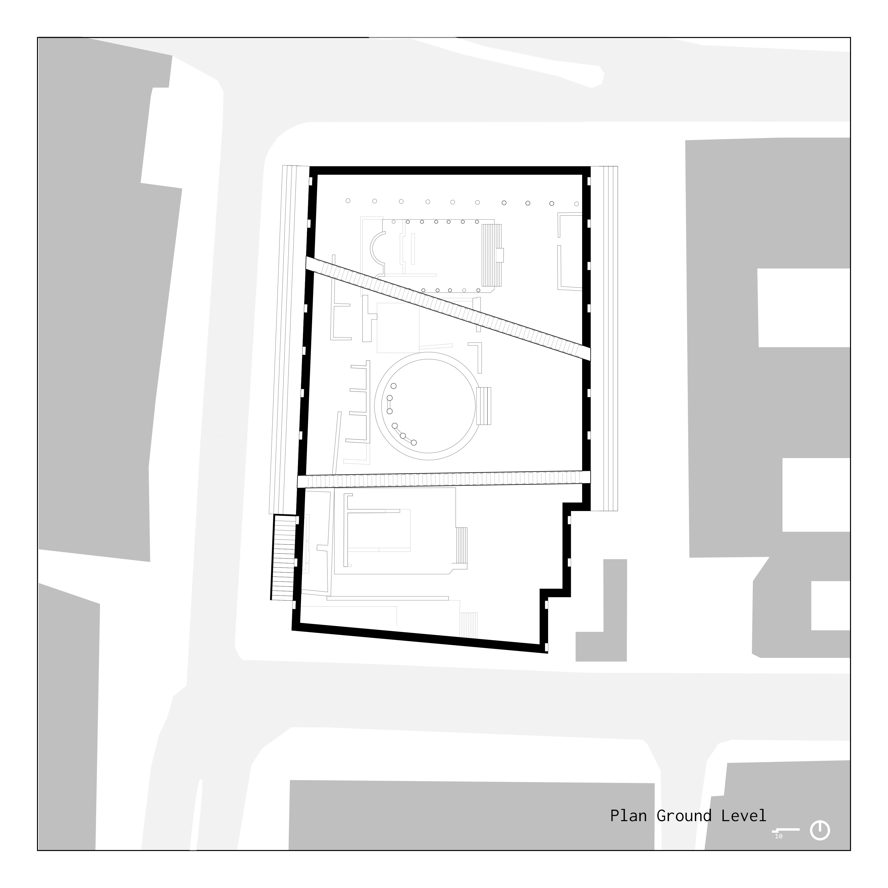
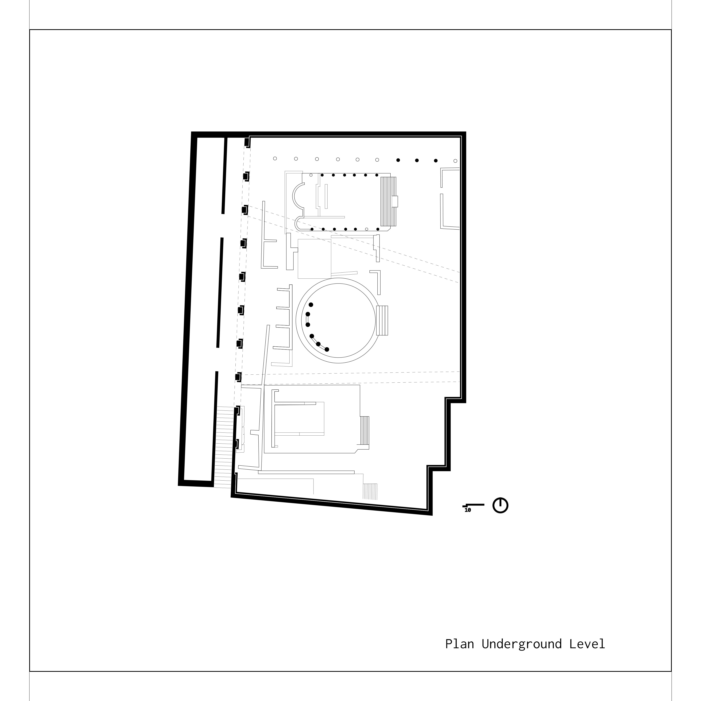
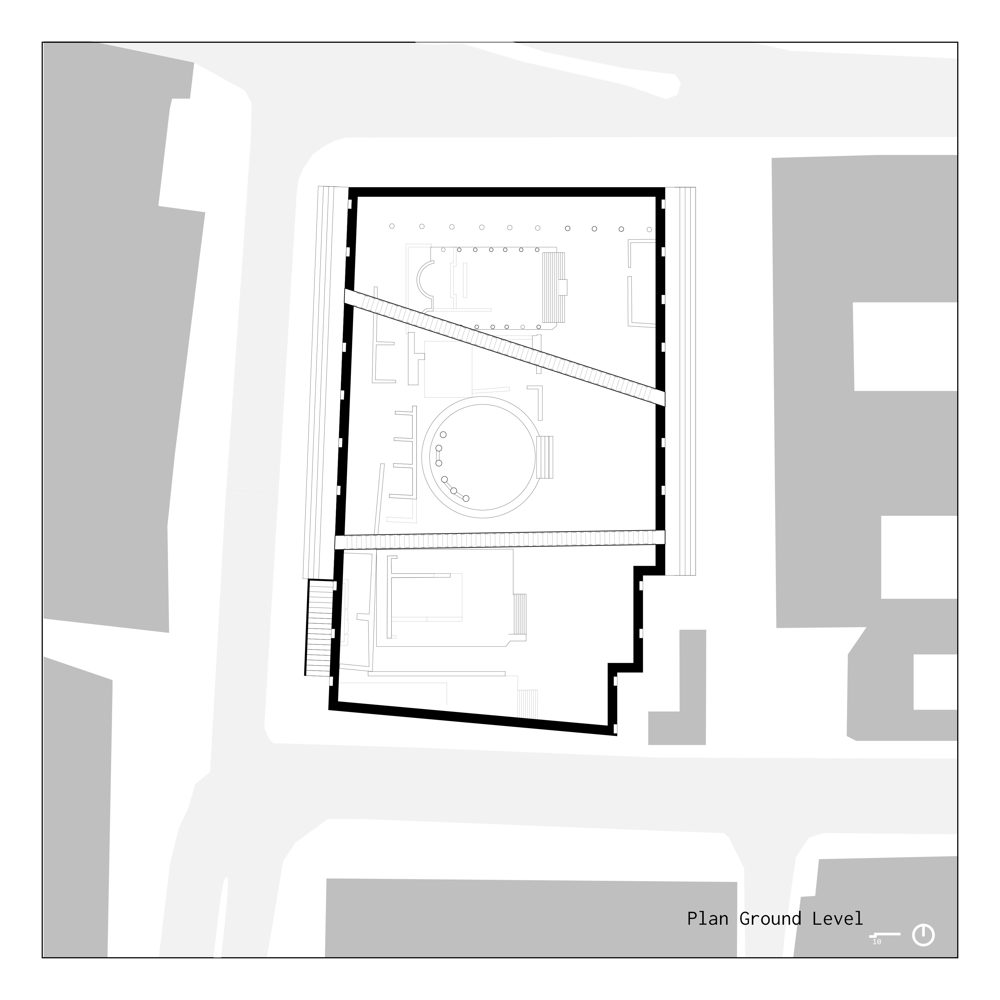
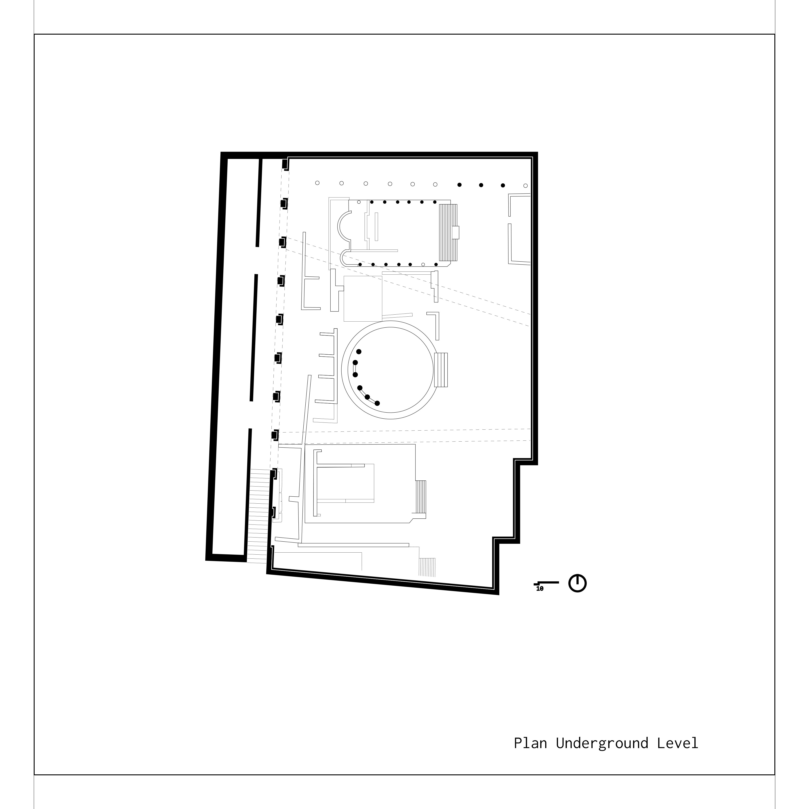

Largo Di Torre Argentina
Spring 2020 | Professors Luben Dimcheff. Claudia Clemente, & Francesco Isidori |
As I explored Rome, I was mesmerized by the archeological sites scattered about the city. This project sought to create a closer connection to the often-overlooked ruins of Largo di Torre Argentina by placing them in an isolated landscape: a monumental limestone wall that urged the passerby to peak with-in and view the site from new perspectives.
 



Conceptual Design
I became fascinated by both the eternal and temporal aspects of Rome. Often in photography of the city, temporal aspects are forgotten or purposefully cut out. The photographer makes sure to photograph the monumental site isolated from any human interaction in the scene. I felt disappointed by this isolation between the two, leaving the beauty of the site untouched. I took an interesting approach in an effort to promote more engagement with the ruins of Rome, constructing a wall to spark a curiosity that didn't seem to exist before, and creating space for interaction.
 

Sketchbook
Traveling about Italy, I recorded my notes on Largo di Torre Argentina and other sites in this small sketchbook. I have chosen to highlight a few pages.
 



Site Intervention
The site intervention features both street level and site level methods of experiencing the site. At street level narrow suspension bridges suspend the passerby between the temples. The bridges follow planned routes of traffic connecting between popular theaters and stores in the area, encouraging their use, while hopefully drawing the pedestrian in for a moment of reprieve on their daily commute. At site level, on sees themselves amongst the rumble, experiencing the site as historically intended, looking up to the platforms of the temples. Outside, the steps along the wall serve as a community space.